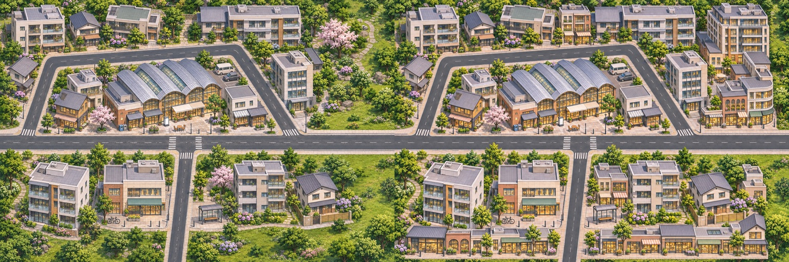
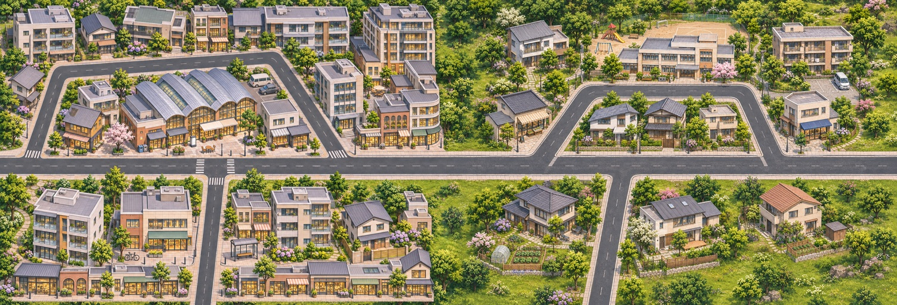
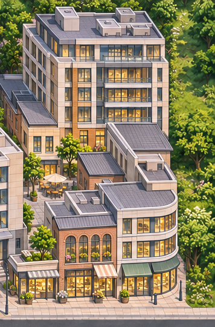
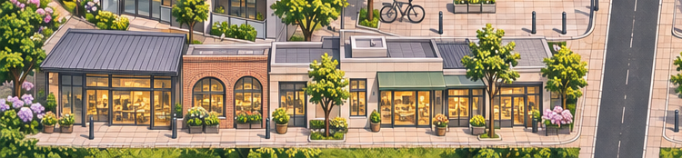

用户已认可旧版的画风、颜色、清晰度、楼路比例。本次保留市场身份，以一次真实mask编辑增加核心建筑；B没有重生。

两边原生均1536×1024。页面总览等比半尺寸；点击看3072×1024原像素并排，不以缩图宣称高清。

区域位置未改，B偏移1472/0、核心分界1504。此图仅用于看密度与过渡；A保护区像素未通过，不是导航接入放行证据。

后排体量、前排连贯商铺明显增加；新楼完整原生可看。不能通过裁断其右侧或地脚来满足原mask。

低层成组前场取代空草地，不是多放树或换招牌。比例与新密度仍须用户审阅。
实际输入可编辑区导向 · API实际mask · 新楼跨mask边界证据 · 真实差分
输入蓝区只是PIL标注，不是新美术；生成后没有滤色、复制旧楼、变形或程序画楼。新Tiled/同坐标导航未晋升，未用户验收，未开始其他区域。